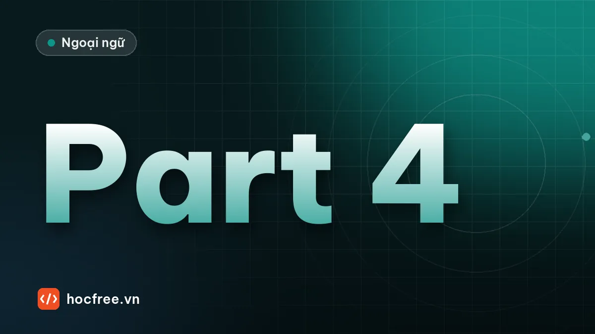

TOEIC Part 4: thông báo, tin nhắn thoại, quảng cáo, bản tin
Sáu dạng bài nói của Part 4 và khung nội dung của từng dạng, biết trước thông tin nằm đầu, giữa hay cuối bài để bắt đúng đáp án.

Học xong bài này, bạn sẽ
- Nhận ra 6 dạng bài nói hay gặp và khung của từng dạng
- Đoán vị trí thông tin theo câu hỏi
- Nghe hiểu thông báo, tin nhắn thoại, giới thiệu diễn giả
Nên học trước: Câu hỏi ý định người nói và câu hỏi kèm hình
Part 4 có 30 câu, gồm 10 bài nói ngắn của một người, mỗi bài 3 câu hỏi in sẵn trong đề. Kỹ thuật đọc trước câu hỏi giống hệt Part 3. Điểm khác là Part 4 chỉ có một người nói, và các bài nói đi theo khung nội dung khá cố định. Thuộc khung của từng dạng thì bạn biết trước thông tin nằm ở đầu, giữa hay cuối bài.
Sáu dạng bài nói hay gặp
1. Tin nhắn thoại (voicemail) và lời nhắn tự động
| Phần | Nội dung | Câu hỏi thường gặp |
|---|---|---|
| Mở | Hi, this is Lan from ABC calling for Mr. Kim. | Who is the speaker? Where does the speaker work? |
| Thân | Lý do gọi: xác nhận lịch, báo vấn đề, trả lời yêu cầu | Why is the speaker calling? What problem does she mention? |
| Kết | Yêu cầu hành động: Please call me back at… / Could you send… | What does the speaker ask the listener to do? |
Lời nhắn tự động của tổng đài: "Thank you for calling… Our office hours are… For billing, press 2." Câu hỏi hay hỏi giờ làm việc, cách liên hệ, phím cần bấm.
2. Thông báo (announcement)
Ở công ty, sân bay, nhà ga, cửa hàng. Khung: ai thông báo cho ai → thông báo gì (thay đổi, sự cố, sự kiện) → người nghe cần làm gì.
- Attention, passengers. Flight 302 to Busan has been delayed due to… Please proceed to gate 9.
- Good morning, everyone. Starting next week, the cafeteria will…
3. Quảng cáo (advertisement)
Khung: câu hỏi gợi nhu cầu → sản phẩm, dịch vụ → điểm nổi bật → ưu đãi có thời hạn → cách mua. Câu hỏi hay hỏi: sản phẩm là gì, điểm khác biệt, ưu đãi đến bao giờ, làm sao nhận ưu đãi (mention this ad, use code…).
4. Bản tin: tin tức, thời tiết, giao thông
Câu hỏi hay hỏi chủ đề chính, nguyên nhân (kẹt xe do đâu), lời khuyên (đi đường khác), và tin tiếp theo là gì (Stay tuned for… ở câu cuối).
5. Giới thiệu diễn giả, phát biểu, trao giải
Khung: chào mừng → giới thiệu người (thành tích, kinh nghiệm) → chủ đề hôm nay → mời lên. Câu hỏi: người được giới thiệu là ai, nổi tiếng vì điều gì, sự kiện là gì.
6. Trích đoạn cuộc họp, hướng dẫn, tham quan
Người quản lý họp nhóm, hướng dẫn viên dẫn tham quan nhà máy, bảo tàng. Khung: mục đích hôm nay → nội dung chính hoặc quy định → việc tiếp theo. Hay có câu hỏi ý định người nói và câu hỏi kèm hình (sơ đồ, lịch trình).
Từ báo hiệu thông tin quan trọng
| Nghe thấy | Sắp nói đến |
|---|---|
| Unfortunately, / I'm afraid / However, | Vấn đề, tin xấu |
| That's why / So / Because of this | Nguyên nhân, kết quả |
| Please make sure / Remember to / Don't forget | Yêu cầu, việc người nghe phải làm |
| If you'd like… / For more information, | Cách liên hệ, hành động tiếp theo |
| For a limited time / Until the end of the month | Ưu đãi, thời hạn |
| Next, / Now, let's / After that | Phần tiếp theo của bài, việc sắp làm |
Làm mẫu một bài
71. Who most likely are the listeners? (A) New employees (B) Factory visitors (C) Hotel guests (D) Delivery drivers
72. What does the speaker say about the cafeteria? (A) It is closed today. (B) It serves free lunch on Fridays. (C) It is located on the second floor. (D) It has a new menu.
73. What are the listeners asked to do before 3 P.M.? (A) Collect their uniforms (B) Take a photo for an ID card (C) Sign a contract (D) Attend a safety talk
Good morning, and welcome to your first day at Hoa Binh Textiles. My name is Thuy, and I'm in charge of training here. This morning, I'll give you a tour of the production floor and introduce you to your supervisors. Lunch is from twelve to one in our cafeteria, which is on the second floor, just above the main entrance. After lunch, you'll attend a safety talk with our engineer, Mr. Dung. Oh, and one more thing: please stop by the HR office before three o'clock to have your photo taken. We need it for your ID badge, and you won't be able to enter the building tomorrow without one.
Xem đáp án và phân tích
- (A) – welcome to your first day ở câu đầu.
- (C) – cafeteria, which is on the second floor.
- (B) – before three o'clock to have your photo taken… for your ID badge. (D) là bẫy: buổi an toàn cũng diễn ra buổi chiều nhưng không có hạn 3 giờ. Để ý cụm báo hiệu one more thing: please… ngay trước thông tin này.
Bài tập
Đọc tin nhắn thoại và trả lời.
Hi, Mr. Lam. This is Grace from Bright Print. I'm calling about the brochures you ordered for the trade show. We've finished printing them, but our delivery van broke down this morning, so we can't bring them to your office today as planned. We could deliver them first thing tomorrow, or you're welcome to pick them up from our shop on Nguyen Trai Street this afternoon. Please call me back at 024-3555-0123 to let me know which you prefer.
1. What kind of business does the speaker work for? (A) A printing company (B) A delivery service (C) A car repair shop (D) An event organizer
2. What problem does the speaker mention? (A) Some brochures contain errors. (B) A vehicle is not working. (C) An order was lost. (D) A shop is closed.
3. What is the listener asked to do? (A) Visit a trade show (B) Pay an invoice (C) Choose a delivery option (D) Send a design
Xem đáp án
1. A – Bright Print, finished printing. 2. B – delivery van broke down → a vehicle is not working. 3. C – giao sáng mai hay tự lấy chiều nay, let me know which you prefer.
Luyện nói. Để lại một tin nhắn thoại 30 giây cho nhà cung cấp theo khung 3 phần: bạn là ai, gọi vì việc gì (lô linh kiện chưa đến), bạn muốn họ làm gì (gọi lại trước 4 giờ chiều).
Xem bài mẫu
Hello, this is Hoa from the purchasing department at Viet Tech. I'm calling about our order of 5,000 connectors, PO number 7842. It was supposed to arrive yesterday, but we haven't received it yet. Could you please check the status and call me back before 4 P.M. today? My number is 090-123-4567. Thank you.